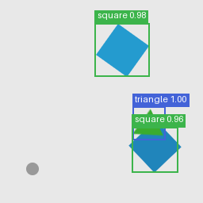
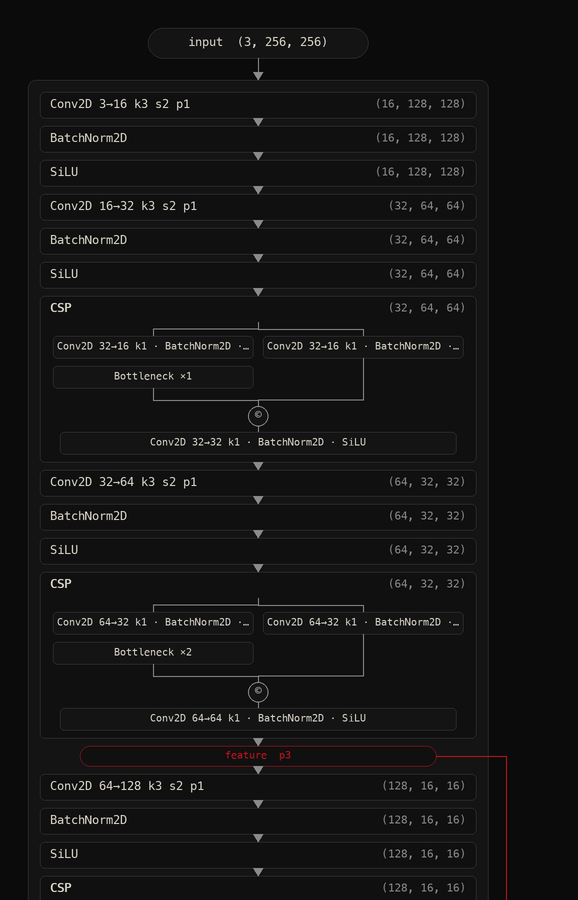

Demo
examples/demo.py runs everything in one script: Felix draws a dataset of circles, squares and triangles, Workflow builds a detector, evaluates it before training, trains it, fine-tunes it with INT8 QAT, exports it, and runs predictions.
python examples/demo.py # 600 images, 20 epochs + 3 QAT epochs
python examples/demo.py --epochs 40 --device cudaOutputs in demo_out/: the dataset, architecture.png, training checkpoints (runs/, runs_qat/), detector.nbm, detector-int8.nbm, detector.onnx, and results/ with annotated predictions and predictions.json.
What it does
- Data. A Felix pipeline with three shape classes, 1-3 objects per image (thresholds), random scale, rotation, hue and brightness, and an unannotated grey decoy. Felix splits it into 480 train, 60 val and 60 test images.
- Architecture. A backbone of strided Conv-BN-SiLU steps with CSP blocks and SPPF, three named features,
wf.FPN+wf.PANandwf.head(classes=3): 1.29M parameters, 0.80 GFLOPs at 256×256. wf.eval(model)before training: size, FLOPs, latency and FPS.- Training:
model.train(train, validation=val, epochs=20). - QAT fine-tune:
model.train(..., epochs=23, quantization=wf.QAT(precision="int8"))continues from epoch 21 with the trained weights and optimizer, simulating int8 for three epochs. - Export: an INT8
.nbmwith real int8 weights, and an ONNX file. - Prediction: the INT8 model loaded from disk detects objects in three test images; results go to
results/.
Results
Measured on an Apple-silicon laptop CPU (Workflow's native C core, 8 threads):
| training | about 18 s per epoch (480 images, batch 16); QAT epochs about 24 s |
| test mAP50 / mAP50-95 (fp32) | 0.974 / 0.840 |
| test mAP50-95 after INT8 QAT | 0.840 (no loss) |
| model files | 19.7 MB .nbm with training state · 1.3 MB INT8 .nbm · 4.9 MB ONNX |
| inference | about 57 FPS at batch 1, about 109 images/s at batch 8 (CPU) |
The same script trains on a GTX 1050 with --device cuda (about 11 s per epoch at this size). Numbers vary with the random dataset and hardware.

